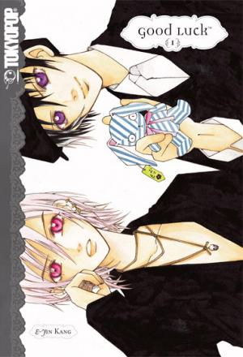

The MMM
Goodluck

-
Alternative Names: Good Luck
Author(s): Kang E-jin
Genres: Comedy, Drama, Romance, School Life, Shoujo
Release: 2002
Status: Complete
Type: Manhwa
Length: 5 Volumes 25 Chapters
Read Online @:

More Info @:

Notes
Shi-Hyun believes that she is "the bringer of misfortune" because little to big misfortunes tend to happen around her. She gets picked on at school because of this so to survive she has built up a personality that is strong, indiferent and she is very skilled at fencing, good enough to protect herself. When she transfers to a differend high school, a fresh start brings new people and new challenges to her life.